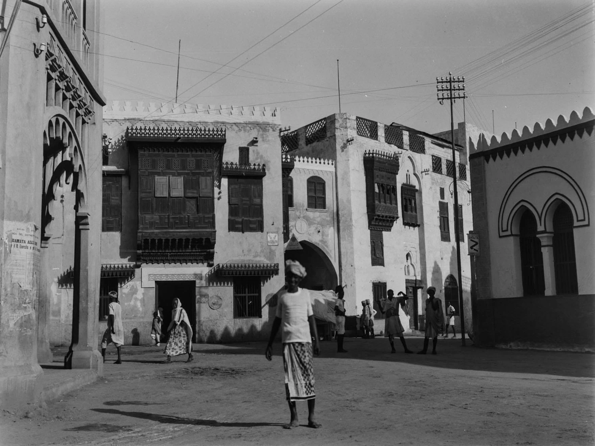

Massawa Urban Heritage: Discover the Rich History of Eritrea's Coastal Gem
The city is considered a mosaic carrying in its folds a mixture of residents and dialects, like all
the ports in the world.
The immigrants and merchants coming from all countries settled in it, mixed
with its residents, and set up their businesses. Everyone lived in it like an open museum that differed from
the rest of their surroundings.

Geographical overview of the city of Massawa
Massawa is the second most important city and the main
port in Eritrea, it is located on the coast of the Red Sea, one of the most important international trade lines, and it
was an important historical port for several centuries.
The city is located on the southwestern coast of the Red
The sea at the northern end of the Gulf of Zula and is followed by
a group of islands known as the Dahlak Archipelago.
Most of its parts are surrounded by the Red Sea and the
Qadam mountain range. The city consists of mainland
Massawa and its suburbs, and three islands, Batse, Tualud, and Sheikh Saeed.
Batse Island is connected to Tualud Island via the Bab Ashra
Bridge and Tualud Island are connected to the mainland
through the Qattan Saqala Bridge.
The timeline of Massawa
- 615:The migration of Companions of the Prophet to the land of Abyssinia via the port of Massawa
- 700: Islamic-style emirates in East Africa
- 1500: The era of marine discovery & the Portuguese occupation
- 1557: The Islamic Ottoman Eyalet of Abyssinia.
- 1865: The Egyptian Khedive Administration
- 1869: Opening of Suez Canal
- 1885: The European Italian Colonialism
The historic city of Massawa is located on the island of Baida,
where the island is almost equally divided between the city and the port,
which is considered the city's lifestyle.
The old city covers an area of 2,5 square kilometers and has 300 buildings
distributed between religious, commercial, and residual buildings